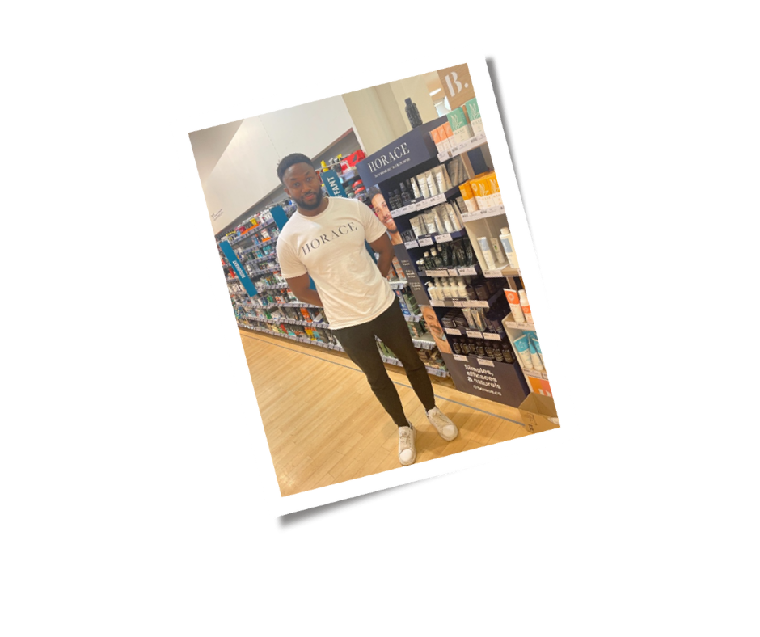

APPEL D'OFFRES · PRESTATION CONSEIL BEAUTÉ · 2027
La beauté,
autrement.
autrement.
Mémoire de renouvellement pour le compte Monoprix Beauté.
PÉNÉLOPE · Remise via NeoGrid · 29 mai 2026

Le partenariat ne se renouvelle pas. Il se mérite, chaque jour.
Une grammaire commerciale en 5 phases, du savoir-être au make-up flash.
Recrutement, école intégrée, segmentation des talents, volantes CDI.
KPIs lisibles, reporting J+10, gouvernance co-construite avec Monoprix.
Terminal sécurisé, Dashboard Crystal temps réel, pilotes mesurés.
Remodeling, MDD, plan prix, événementiel — magasin par magasin.
Dès J+1, rien ne s'arrête : équipes, outils et priorités déjà en place.
Le conseil humain reconnecte la cliente à la marque, là où le digital seul ne suffit pas.
Chaque conseil bien donné devient un panier mieux construit et une vente croisée.
L'enrôlement fidélité s'intègre naturellement au parcours, sans le forcer.
Une qualité d'expérience perçue, mesurée dans la durée par visites mystères et NPS.
6 à 8 conseils qualifiés / jour / conseillère.
Progression du panier moyen et de l'UPT, performance incrémentale suivie.
Ventes croisées multi-rayons maquillage · soin · parfumerie.
Activation fidélité et réachat intégrés au parcours.
Qualité perçue mesurée par visites mystères (partenaire Roamler) et NPS.
Devenir le spécialiste beauté de centre-ville.
Soft-discounters, prix, concurrence sur l'animation.
Concept, plan prix, renouvellement de l'offre.
Le maillon humain qui fait réussir la transformation.
Pas de concurrence frontale avec les hypermarchés — on ne joue pas sur le terrain du prix bas.
Plus accessible que les parfumeries sélectives, mais avec une vraie expertise et un conseil incarné.
Une expérience inspirante et pratique, cohérente en magasin comme en ligne.
Routines coréennes, glass skin — un nouveau langage soin à maîtriser.
Transition des sous-marques à orchestrer en linéaire.
Maquillage naturel et minimaliste, pitch dédié.
La marque propre revalorisée comme destination désirable.
6 à 8 conseils qualifiés / jour / conseillère.
Progression du panier moyen et de l'UPT, performance incrémentale suivie.
Ventes croisées multi-rayons maquillage · soin · parfumerie.
Activation fidélité et réachat intégrés au parcours.
Qualité perçue mesurée par visites mystères (partenaire Roamler) et NPS.
Un module dédié par nouveauté, avant la mise en rayon.
Pitch produit co-construit avec le bureau des achats.
Capacité à équiper l'ensemble du parc sans délai.

• Présenter et inciter à l'achat
• Proposer un essai gratuit
Un « vivier » d'animateurs formés et disponibles.
E-learning + Coaching sur site pour garantir la qualité.
vendue, pas un produit isolé
ventes soin additionnelles (cross-sell)
la conseillère, garante du lancement
pics de fréquentation générés
mécaniques cadeaux qui font monter le ticket
une enseigne qui s'anime
Maquillage de jour, maquillage de soirée.
Prestation encadrée, sans acte de manucure (réservé aux diplômés).
À l'occasion d'animations calendaires et promotionnelles.
La priorité est donnée à la cliente, jamais à l'entretien du stand.
Recommander sur le besoin, le prix et l'affinité — pas sur la marge seule.
Chaque vente est une occasion d'enrôler dans le programme.
Vente principale, puis complémentaire, puis croisée.
Fort potentiel, posture de service, appétence beauté.
Expérience vente beauté, maquillage flash, dynamique commerciale.
Moment beauté qualitatif, attractivité rayon, prestations.
Codes beauté sélective, retail premium, incarnation renforcée.
Un vivier de remplaçantes formées et disponibles.
Des volantes qui connaissent déjà nos standards et nos magasins.
La stabilité de l'emploi au service de la fiabilité.
Viviers dédiés, synergies inter-métiers (event, accueil), CV beauté ciblés.
Entretien métier + mise en situation de conseil et de vente.
Parcours 30/60/90 jours, accompagnement RS dès le démarrage.
Coaching terrain, montée en compétence, plan de carrière.
Pre-boarding, Beauty Immersion Day, prise de poste sécurisée.
Accélération terrain, premiers KPIs, coaching individuel.
Certification « Beauty Expert Premium Monoprix ».
Sécuriser la prise de poste dès les premiers jours.
Augmenter panier moyen et fidélisation sans forcer.
Performance durable et progression mesurable.
Sécuriser l'engagement et stabiliser les équipes.
Porté par Jean-Charles Mulier (Jamel Comedy Club) pour le rythme et l'impact. La vidéo #2 est incarnée par une Beauty Experte terrain : effet miroir puissant.
Format court, mobile-first. Les capsules deviennent un outil d'entraînement à la demande. Glow Up renforce la dynamique en situation client réelle.
Diffusé via vos environnements digitaux internes, le dispositif s'intègre à vos logiques de pilotage et peut être mis en perspective avec vos indicateurs terrain.
ADN Monoprix Beauté · Expérience client signature · Posture corporelle & élégance relationnelle · Intelligence émotionnelle en point de vente
Créer l'appartenance dès le jour 1 · Tisser les liens d'équipe · Ancrer la culture Pénélope × Monoprix
Méthode de vente consultative augmentée · Storytelling produit · Atelier « Glow Up Attitude » · Simulation immersive avec IA comportementale
L'univers de la marque et son positionnement.
Les produits phares et leurs argumentaires.
Des routines adaptées et personnalisées.
Ventes complémentaires et discours de conseil cohérent.
Devenir ambassadrice des marques en magasin.
Faire de chaque conseillère une véritable ambassadrice des marques Monoprix Make-Up et Monoprix Make-Up Bio.
Activation & Alignement Premium · Coaching terrain immersif (visite surprise + débrief stratégique) · Diagnostic posture, discours & expérience client
Accélération Business · Audit panier moyen & performance individuelle · Analyse du taux de transformation · Coaching one-to-one closing & fidélisation
Label Premium Monoprix · Évaluation 360° (technique, posture, KPIs) · Mise en situation vente immersive · Validation « Beauty Expert Premium Monoprix »
Plateaux pédagogiques et ateliers pratiques.
Simulation client, posture, codes Monoprix.
Studios digitaux pour tournage de contenus e-learning.
Seul acteur avec école physique + IA embarquée + coaching terrain structuré.
Renforts positionnés sur les temps forts (Fête des Mères, fêtes, Beauty Week).
Synergie avec le field marketing sur le volet animatrices.
Volantes mobilisables sans délai sur le périmètre.
Plannings calés trois mois à l'avance.
T-shirt noir + tablier, badge « Make up Expert ». Repère connu.
Cohérente avec la signature 2025-2026.
Identifiable, différenciante vs personnel Monoprix.
Au comptoir, l'experte du conseil et de la vente.
Pilote sa zone : visites, coaching, réactivité quotidienne.
Oriane & Mélinda : montée en compétence et masterclass.
Jayne & Florie : pilotage du compte et de la performance.
Sur le Top 30, par les responsables de secteur.
Sur le reste du parc.
Déclenché en cas d'écart, sans logique de sanction au premier signal.
Grille co-construite, opérées par Roamler (partenaire reconnu).
NPS et retours clients tracés, réclamations suivies.
Évaluation partagée et signée avec le magasin.
Revue perf magasin par magasin, KPIs, alertes. RS × responsable catégorie.
Indicateurs consolidés, animés vs non animés, plans d'action.
Bilan, plan de progrès N+1, arbitrages structurants.
Alerte automatique Dashboard Crystal : écart vs seuil.
Visite RS sous 5 jours, cause racine documentée.
Plan formalisé, daté, responsable identifié, partagé avec Monoprix.
Suivi mensuel jusqu'au retour au seuil. Pénalité négociable, jamais au 1er écart.
CA, panier, transformation, classement par PdV et conseillère.
De la direction Monoprix à la fiche perso de la conseillère.
API reliée à NeoGrid, alertes ruptures et conformité merch.
Brief conseillère, formation flash nouveau concept.
Renfort animation, démos flash, push fidélité.
Mesure perf vs avant rénovation, plan d'optimisation si écart.
Bonnes pratiques remontées, partagées au reste du parc.
Co-construit avec le bureau des achats.
Formation flash sur l'ensemble des conseillères.
Make-up artists Monop Make Up activées en magasins phares.
Remontée en temps réel via Dashboard Crystal.
Sur les références prioritaires.
États de stock consolidés chaque semaine.
Un module formation dédié au discours prix dans le nouveau concept.
Le conseil et la démo justifient l'achat, au-delà de l'étiquette.
Un discours aligné sur le plan de compétitivité Monoprix.
Faire venir en magasin.
Théâtralisation, démos, mécaniques cadeaux.
Amplification TikTok & influence.
Un moment beauté exclusif, social-first.
Créatrices de contenu et amplification TikTok.
Collecte opt-in et retargeting au profit de Monoprix.
La cliente vient pour un teint.
La conseillère identifie un besoin de soin.
Elle complète par une découverte parfum.
Elle enrôle et fait revenir.
Corner mobile, diagnostics, masterclass — sur les magasins à fort potentiel.
Sessions live, contenu réutilisable, marque humanisée.
Engagement de réversibilité maîtrisée en cas de changement de prestataire.
Un salaire de base aligné sur le profil, l'expertise et le magasin.
Indexé sur le CA, la performance soin et l'enrôlement fidélité.
Primes et challenges sur les temps forts et les lancements.
Évolution, formation continue et reconnaissance des talents.